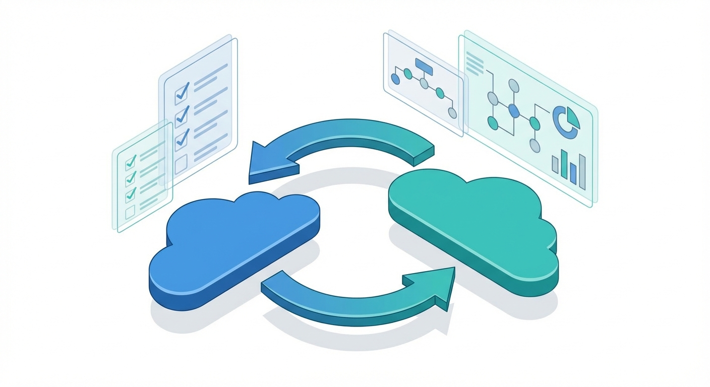

The decision to migrate workloads from Google Cloud Platform (GCP) to Amazon Web Services (AWS) is rarely driven by a single factor. Organizations undertake this complex, multi-quarter initiative because of a convergence of economic, technical, and strategic forces that collectively tip the balance in favor of transition. According to the Flexera 2023 State of the Cloud Report, 87% of enterprises now pursue a multi-cloud strategy, and a growing subset of those organizations are actively re-balancing their cloud portfolios by shifting primary workloads between hyperscalers. Understanding the drivers behind this migration is the essential first step in constructing a defensible business case.
While GCP offers world-class infrastructure—particularly in data analytics, machine learning, and Kubernetes-native services—many enterprises encounter friction points as they scale. These friction points cluster around three primary migration drivers, each supported by industry survey data:
Gartner's 2023 analysis found that organizations operating across two or more hyperscalers reported 19% higher resilience scores on average than single-cloud peers. The diversification benefit is quantifiable, not merely theoretical.
A successful migration narrative rests on three pillars that must be articulated to executive stakeholders:
AWS's pricing architecture offers mechanisms that can materially reduce infrastructure costs. Reserved Instances (RIs) offer up to 72% discount over on-demand pricing when committing to 1- or 3-year terms. Savings Plans provide flexible pricing across instance families, and Spot Instances deliver up to 90% savings for fault-tolerant, interruptible workloads such as batch processing, CI/CD builds, and big-data analytics.
AWS maintains the broadest and deepest set of cloud services available. With 475+ EC2 instance types (compared to GCP's 50+ machine types), purpose-built databases for every data model (relational, key-value, document, graph, time-series, ledger), and region availability in 33 geographic regions, AWS provides the technical surface area that large enterprises require to innovate without constraint.
AWS's ecosystem of ISV integrations, marketplace offerings, and partner programs (over 100,000 partners in the AWS Partner Network) ensures that organizations can source best-of-breed tooling and consulting support. This ecosystem effect compounds over time, reducing friction in procurement, integration, and talent acquisition.
Constructing a credible business case begins with a baseline GCP spending audit. This audit must capture not only direct compute, storage, and networking costs but also indirect costs such as support contracts, committed-use discount obligations, and internal labor associated with GCP-specific tooling and processes. The following steps form the foundation:
# Example: Exporting GCP billing data to BigQuery for baseline analysis
bq query --use_legacy_sql=false \
'SELECT
project.id AS project_id,
service.description AS service,
sku.description AS sku,
SUM(cost) AS total_cost,
SUM(usage.amount) AS total_usage
FROM `my-billing-project.billing_dataset.gcp_billing_export_v1_XXXXXX`
WHERE invoice.month BETWEEN "202301" AND "202312"
GROUP BY project_id, service, sku
ORDER BY total_cost DESC
LIMIT 50'Understanding the specific discount instruments available on AWS is critical to projecting post-migration savings accurately:
| Mechanism | Max Discount | Commitment | Best For |
|---|---|---|---|
| Reserved Instances (Standard) | Up to 72% | 1 or 3 years, specific instance type | Steady-state, predictable workloads |
| Reserved Instances (Convertible) | Up to 54% | 1 or 3 years, flexible instance family | Workloads likely to change instance type |
| Savings Plans (Compute) | Up to 66% | 1 or 3 years, $/hr commitment | Variable workloads across families & regions |
| Savings Plans (EC2 Instance) | Up to 72% | 1 or 3 years, specific family in a region | Predictable workloads within a family |
| Spot Instances | Up to 90% | None (interruptible with 2-min notice) | Batch, HPC, CI/CD, fault-tolerant jobs |
A common mistake in migration business cases is underestimating hidden and transitional costs. These must be factored into the Total Cost of Ownership (TCO) model:
Data leaving a cloud provider incurs egress charges. GCP charges approximately $0.12 per GB for standard internet egress (first 1 TB), while AWS charges roughly $0.09 per GB for comparable tiers. During migration, bulk data transfer via AWS Transfer Family, AWS DataSync, or physical AWS Snowball devices can significantly reduce egress costs for large datasets (10+ TB).
| Cost Category | GCP (Typical) | AWS (Typical) | Notes |
|---|---|---|---|
| Internet Egress (first 1 TB/mo) | ~$0.12/GB | ~$0.09/GB | AWS slightly lower; both offer volume discounts |
| Inter-region Transfer | ~$0.01/GB | ~$0.02/GB | GCP advantage due to global VPC model |
| Premium Support | $500/mo or 3% of spend | $15K/mo or 3–10% of spend | AWS Enterprise Support is more expensive but broader |
| Training & Certification | $200–$300/person | $150–$300/person | Comparable per exam; AWS has larger course catalog |
| Migration Tooling | N/A | Free (AWS MGN, DMS) | AWS provides native migration tools at no extra cost |
AWS Enterprise Support starts at $15,000/month or a percentage of monthly spend (whichever is greater). Organizations accustomed to GCP's Premium Support pricing may experience sticker shock, but AWS Enterprise Support includes a designated Technical Account Manager (TAM), Trusted Advisor checks, and Infrastructure Event Management—services that can accelerate migration timelines and reduce operational risk.
Cloud architect salaries in the AWS ecosystem range from $145,000 to $185,000 (USD) at the senior level. If your current team is GCP-certified, budget for AWS certification training: the Solutions Architect Professional exam preparation typically requires 80–120 hours of study per engineer. Factor in productivity loss during the transition period.
Before initiating migration, audit your existing GCP Committed Use Discounts (CUDs). These are non-cancellable 1- or 3-year commitments. Migrating workloads before CUDs expire means paying for unused GCP capacity and new AWS resources simultaneously—a scenario that can eliminate projected savings entirely. Align your migration timeline with CUD expiration dates wherever possible.
A well-constructed TCO model projects costs across a 3- to 5-year horizon and accounts for:
Always present your business case with three scenarios: conservative (10% savings), moderate (23% savings), and aggressive (35% savings). This demonstrates rigor and gives decision-makers confidence that even the worst-case scenario justifies the investment. Use Monte Carlo simulation if your organization's finance team requires probabilistic modeling.